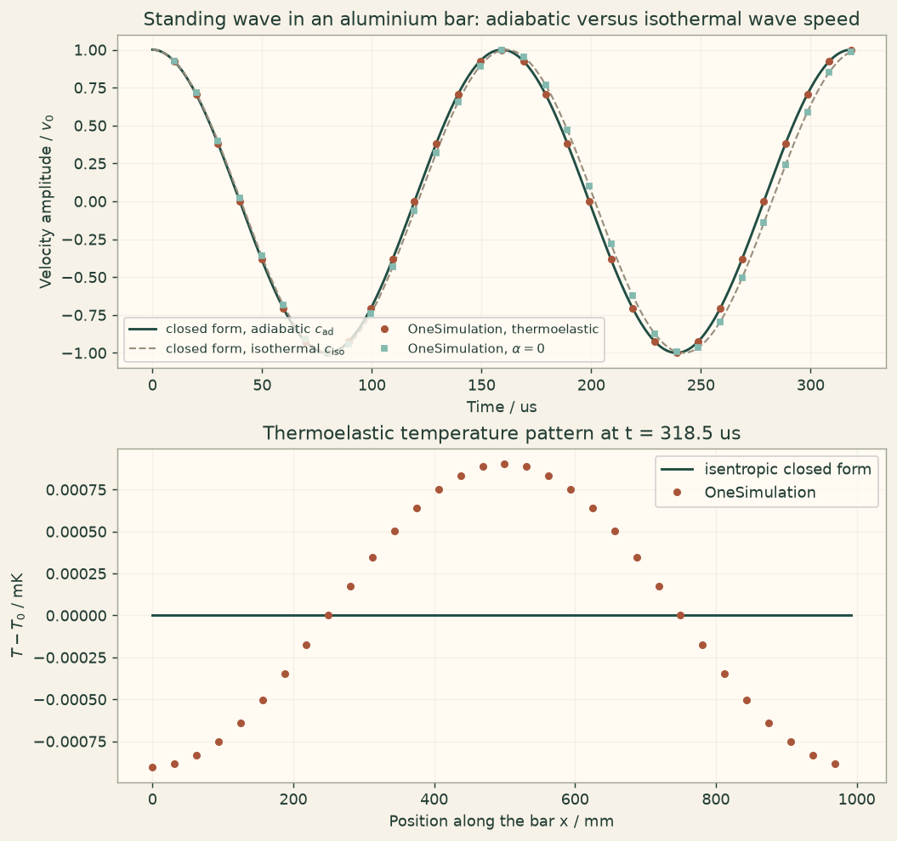

Docs › Examples › Adiabatic thermoelastic wave
Thermoelasticity · 3D
Adiabatic thermoelastic wave
A standing elastic wave with reversible thermoelastic coupling, graded against the adiabatic wave speed.

What it computes
OneSimulation advances the coupled displacement-temperature equations without heat conduction, and repeats the run without coupling for the isothermal speed.
What it checks
The wave speeds match c_ad and c_iso to about 0.01 % (stiffening ratio 1.0133 as predicted); the temperature pattern is within 0.1 %; energy and entropy are conserved.
The notebook
The complete notebook, cell by cell. Run it to produce the figures and the comparison printout.
A long aluminium bar carries a longitudinal standing wave. Compressing a solid warms it slightly and stretching cools it (the thermoelastic effect), so an elastic wave is accompanied by a small travelling temperature pattern. When heat conduction is negligible over one period the process is adiabatic: the temperature rise stiffens the material, and the wave runs faster than the isothermal elastic constants predict.
OneSimulation solves the fully coupled, reversible thermoelastic system on a periodic Q1 finite-element mesh,
with \(\theta=T-T_0\), the stress-temperature modulus \(\beta=E\alpha/(1-2\nu)\) and the thermal conductivity \(k\) set to zero. The time integrator is the implicit midpoint rule, which conserves the discrete perturbation energy
exactly. All six faces of the bar segment are periodic, so a wave of one wavelength \(L\) along the axis is laterally confined (zero lateral strain).
Reference. For a plane wave \(u_x(x,t)\) with zero lateral strain the momentum equation reduces to \(\rho\ddot u=M u''-\beta\theta'\) with the P-wave modulus \(M=E(1-\nu)/\big((1+\nu)(1-2\nu)\big)\), and the entropy equation with \(k=0\) integrates to \(\theta=-\big(T_0\beta/\rho c\big)\,u'\) (isentropic relation). Eliminating \(\theta\) gives \(\rho\ddot u=\big(M+T_0\beta^2/\rho c\big)u''\), i.e.
A standing wave \(u=(v_0/\omega)\sin(kx)\sin(\omega t)\) started from the velocity \(v_0\sin(kx)\) therefore oscillates at \(\omega=k\,c_\text{ad}\) and carries the temperature \(\theta=-\big(T_0\beta k v_0/\rho c\,\omega\big)\cos(kx)\sin(\omega t)\). We measure \(\omega\) from the computed velocity amplitude, compare it with \(k\,c_\text{ad}\) and with \(k\,c_\text{iso}\) (a second run with \(\alpha=0\)), check the temperature field and verify that the energy is conserved.
from importlib.metadata import version
import numpy as np
import matplotlib.pyplot as plt
from scipy.optimize import curve_fit
from onesim.physics.multiphysics.thermomechanical import ReversibleThermoelasticProvider
print("OneSimulation:", version("onesimulation"))Parameters
Aluminium at room temperature. The coupling strength is measured by the dimensionless thermoelastic parameter \(\delta=T_0\beta^2/(\rho c M)\); for metals it is a few percent, so the adiabatic wave speed exceeds the isothermal one by about \(\delta/2\).
L = 1.0 # m, periodic length of the bar segment (one wavelength)
cross = 0.02 # m, lateral size of the bar
E, nu, alpha = 70e9, 0.33, 23e-6 # Pa, -, 1/K
rho, c_heat = 2700.0, 900.0 # kg/m^3, J/(kg K)
T0 = 300.0 # K, reference temperature
v0 = 0.01 # m/s, velocity amplitude of the initial standing wave
cells_x = 128 # Q1 cells along the bar (3 cells across each lateral direction)
M = E * (1 - nu) / ((1 + nu) * (1 - 2 * nu)) # Pa, P-wave (confined) modulus
beta = E * alpha / (1 - 2 * nu) # Pa/K, stress-temperature modulus
c_iso = np.sqrt(M / rho)
c_ad = np.sqrt(M / rho + T0 * beta**2 / (rho**2 * c_heat))
delta = T0 * beta**2 / (rho * c_heat * M)
k_wave = 2 * np.pi / L
omega_ad, omega_iso = k_wave * c_ad, k_wave * c_iso
period = 2 * np.pi / omega_ad
print(f"P-wave modulus M = {M/1e9:.2f} GPa, beta = {beta/1e6:.3f} MPa/K, delta = {delta:.4f}")
print(f"isothermal speed c_iso = {c_iso:.2f} m/s, adiabatic speed c_ad = {c_ad:.2f} m/s,"
f" ratio c_ad/c_iso = {c_ad/c_iso:.5f}")Model
The provider builds the periodic Q1 mesh and the coupled system. It integrates from \(t=0\) to one final time, so we call it once per sampled time to record the evolution of the standing wave over two periods. A second provider with \(\alpha=0\) gives the purely elastic (isothermal) wave on the same mesh and with the same time step, which isolates the thermoelastic stiffening from any discretisation effect.
shape, extents = (cells_x, 3, 3), (L, cross, cross)
time_step = period / 400
sample_times = np.linspace(0.0, 2 * period, 33)[1:]
def make_provider(expansion, final_time):
return ReversibleThermoelasticProvider(
shape=shape, extents=extents,
density=rho, heat_capacity=c_heat, youngs_modulus=E, poisson_ratio=nu,
thermal_expansion=expansion, reference_temperature=T0,
thermal_conductivity=0.0, # adiabatic: no heat conduction
final_time=final_time, time_step=time_step,
)
axis_x = make_provider(alpha, time_step).axes[0]
mode = np.sin(k_wave * axis_x)
initial_velocity = np.zeros((*shape, 3))
initial_velocity[..., 0] = v0 * mode[:, None, None]
print("Mesh:", cells_x, "x 3 x 3 periodic Q1 cells, time step:", f"{time_step:.3e} s")
def amplitude(field_x):
# Projection of the x-component on the standing-wave mode sin(kx) (exact on the uniform grid).
return float(2.0 * np.mean(field_x[:, 0, 0] * mode))
def evolve(expansion):
velocities, energy_drift, entropy_change, last = [], [], [], None
for t in sample_times:
last = make_provider(expansion, float(t)).run(initial_velocity=initial_velocity)
velocities.append(amplitude(last.velocity[..., 0]))
energy_drift.append(abs(last.energy_residual) / last.initial_energy)
entropy_change.append(float(np.max(np.abs(last.entropy_density_change))))
return np.asarray(velocities), np.asarray(energy_drift), np.asarray(entropy_change), last
velocity_coupled, drift_coupled, entropy_coupled, final_coupled = evolve(alpha)
velocity_elastic, drift_elastic, _, _ = evolve(0.0)Comparison with the closed-form wave speeds
The modal velocity amplitude follows \(v_0\cos(\omega t)\). A least-squares fit of \(\omega\) to the sampled amplitudes gives the computed wave speed \(\omega/k\) for the coupled and for the purely elastic run.
def cosine(t, amplitude_0, omega):
return amplitude_0 * np.cos(omega * t)
(_, omega_num_coupled), _ = curve_fit(cosine, sample_times, velocity_coupled, p0=(v0, omega_iso))
(_, omega_num_elastic), _ = curve_fit(cosine, sample_times, velocity_elastic, p0=(v0, omega_iso))
c_num_coupled, c_num_elastic = omega_num_coupled / k_wave, omega_num_elastic / k_wave
err_ad = abs(c_num_coupled / c_ad - 1)
err_iso = abs(c_num_elastic / c_iso - 1)
ratio_num, ratio_ref = c_num_coupled / c_num_elastic, c_ad / c_iso
print(f"Coupled run: c = {c_num_coupled:.2f} m/s, closed-form c_ad = {c_ad:.2f} m/s ({100*err_ad:.3f} % off)")
print(f"Elastic run: c = {c_num_elastic:.2f} m/s, closed-form c_iso = {c_iso:.2f} m/s ({100*err_iso:.3f} % off)")
print(f"Adiabatic stiffening c_ad/c_iso: computed {ratio_num:.5f}, closed form {ratio_ref:.5f}")
assert err_ad < 2e-3, "Computed wave speed deviates from the adiabatic value by more than 0.2 %."
assert err_iso < 2e-3, "Purely elastic wave speed deviates from the isothermal value by more than 0.2 %."
# The thermoelastic stiffening itself (about 1.3 % in speed) is reproduced to within 5 % of its size.
assert abs((ratio_num - 1) / (ratio_ref - 1) - 1) < 0.05, "Adiabatic stiffening not reproduced."
assert c_num_coupled > c_num_elastic, "The adiabatic wave must be faster than the isothermal one."
# Temperature field at the last sampled time against the isentropic closed form.
t_end = float(sample_times[-1])
theta_amplitude = T0 * beta * k_wave * v0 / (rho * c_heat * omega_ad)
theta_ref = -theta_amplitude * np.cos(k_wave * axis_x) * np.sin(omega_ad * t_end)
theta_num = final_coupled.temperature[:, 0, 0] - T0
theta_error = float(np.max(np.abs(theta_num - theta_ref)))
print(f"Temperature amplitude: {1e3*theta_amplitude:.3f} mK, max deviation from the closed form:"
f" {1e3*theta_error:.4f} mK ({100*theta_error/theta_amplitude:.2f} % of the amplitude)")
assert theta_error < 0.02 * theta_amplitude, "Temperature pattern deviates from the isentropic relation."
# Energy conservation and isentropy at every sampled time.
print(f"Largest relative energy drift: coupled {np.max(drift_coupled):.1e}, elastic {np.max(drift_elastic):.1e}")
entropy_scale = rho * c_heat / T0 * theta_amplitude
print(f"Largest entropy-density change: {np.max(entropy_coupled):.2e} J/(m^3 K)"
f" (scale rho c theta/T0 = {entropy_scale:.2f} J/(m^3 K))")
assert np.max(drift_coupled) < 1e-9 and np.max(drift_elastic) < 1e-9, "The perturbation energy must be conserved."
assert np.max(entropy_coupled) < 1e-8 * entropy_scale, "Without conduction the process must stay isentropic."
assert final_coupled.conductive_dissipation == 0.0Figure
cream = "#fbf5eb"
fig, axes = plt.subplots(2, 1, figsize=(8, 7.5), constrained_layout=True)
fig.patch.set_facecolor(cream)
for ax in axes:
ax.set_facecolor("#fffaf2")
ax.grid(alpha=0.25)
dense_t = np.linspace(0.0, 2 * period, 600)
axes[0].plot(dense_t * 1e6, np.cos(omega_ad * dense_t), color="#214D43", lw=1.6,
label=r"closed form, adiabatic $c_\mathrm{ad}$")
axes[0].plot(dense_t * 1e6, np.cos(omega_iso * dense_t), color="#9a8f7d", lw=1.2, ls="--",
label=r"closed form, isothermal $c_\mathrm{iso}$")
axes[0].plot(sample_times * 1e6, velocity_coupled / v0, "o", color="#A85539", ms=4,
label="OneSimulation, thermoelastic")
axes[0].plot(sample_times * 1e6, velocity_elastic / v0, "s", color="#5b8fb3", ms=3.5,
label=r"OneSimulation, $\alpha=0$")
axes[0].set(xlabel="Time / us", ylabel=r"Velocity amplitude / $v_0$",
title="Standing wave in an aluminium bar: adiabatic versus isothermal wave speed")
axes[0].legend(loc="lower left", fontsize=8.5, ncol=2)
axes[1].plot(axis_x * 1000, theta_ref * 1e3, color="#214D43", lw=1.6, label="isentropic closed form")
axes[1].plot(axis_x[::4] * 1000, theta_num[::4] * 1e3, "o", color="#A85539", ms=4, label="OneSimulation")
axes[1].set(xlabel="Position along the bar x / mm", ylabel=r"$T-T_0$ / mK",
title=f"Thermoelastic temperature pattern at t = {t_end*1e6:.1f} us")
axes[1].legend(loc="upper right")
plt.show()Going further
Switch on the thermal conductivity: the wave then damps and produces entropy, and the energy balance acquires the conductive dissipation term. Replace aluminium by a polymer or a rubber-like solid with a much larger thermal expansion and watch the adiabatic stiffening grow; or shorten the wavelength until heat has time to flow across it within a period, which moves the wave from the adiabatic towards the isothermal speed.